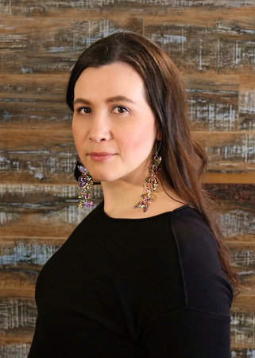
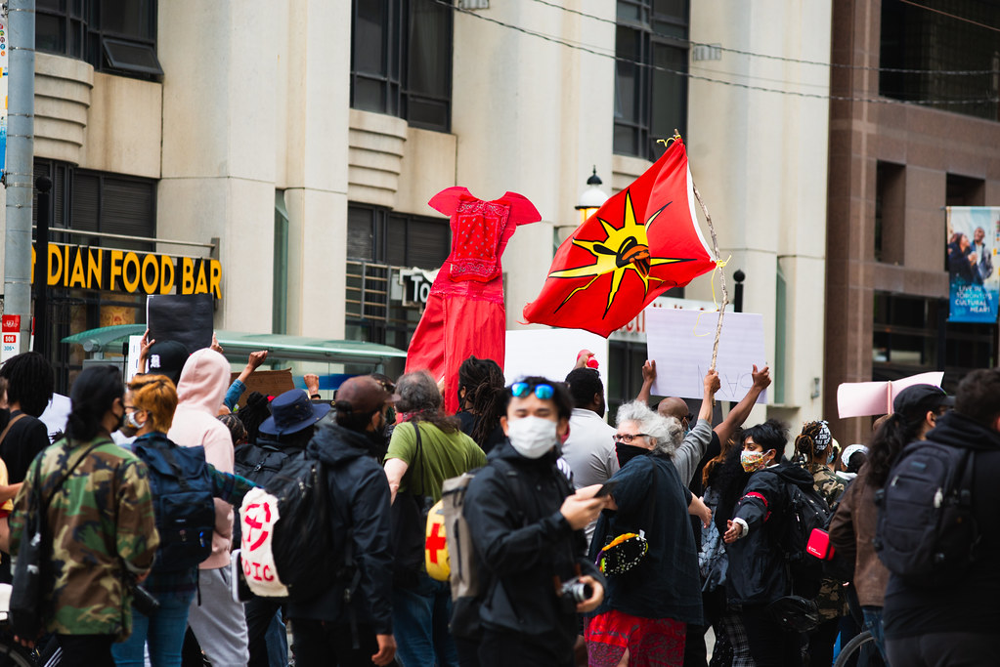

Family separation
Broken relationships are connected to colonial systems, including child welfare and the history of the Sixties Scoop.
ENG4U Independent Study Project - Multimedia Website
A postcolonial reading of Katherena Vermette's novel as a story of family rupture, cultural memory, and Indigenous women's resistance.
katherena vermette is a Metis writer from Treaty 1 territory, Winnipeg, Manitoba. Her writing often connects family, place, memory, Indigenous identity, and the ongoing effects of colonial violence.
Knowing Vermette's background matters because The Strangers is not written as a distant social issue. It is a literary work grounded in Indigenous women's voices, intergenerational relationships, and the realities of Winnipeg and the Canadian colonial context.

From a postcolonial perspective, Katherena Vermette's The Strangers shows that family disconnection is a lasting effect of colonial power, while reconnecting with family, preserving cultural memory, and surviving as Indigenous women all serve as acts of resistance against colonial harm.
Broken relationships are connected to colonial systems, including child welfare and the history of the Sixties Scoop.
Memory, language, and family stories become ways of resisting erasure and rebuilding identity.
Survival is not passive. Indigenous women's continued presence challenges the colonial logic of elimination.

Image citations are included in the Works Cited / Consulted section.
"I don't even know who I am."
This line expresses identity loss, not just ordinary confusion. In a postcolonial reading, the speaker's uncertainty reflects how family separation and cultural disconnection can make identity feel unstable.
"Like blood memory."
This short phrase suggests that cultural knowledge can remain alive even after colonial interruption. It supports the thesis because memory becomes something inherited, embodied, and resistant.
"I just want to know them."
The desire to know family becomes a political act because colonial systems have repeatedly tried to break kinship ties. Reconnection is therefore emotional, but it is also resistance against erasure.
Note: These short quotations are located through the supplied study-guide/quotation source and should be verified against the official novel text if page-specific citation is required.
Patrick Wolfe's theory helps explain why broken family bonds matter. If settler colonialism attempts to weaken Indigenous continuity, then rebuilding family and memory becomes resistance.
Remembering names, relatives, language, stories, and history keeps Indigenous identity alive across generations. Vermette's multi-voice form turns memory into structure.
The MMIWG context shows that Indigenous women face violence shaped by colonial and patriarchal systems. This makes survival and care politically meaningful in the novel.
Indigenous children were removed from families and communities through child welfare systems, producing long-term loss of kinship and identity.
The National Inquiry links violence against Indigenous women, girls, and 2SLGBTQQIA+ people to colonial structures and institutional failure.
The Strangers transforms these public histories into intimate family narrative, showing how harm is lived across generations.
The old audio file is still included as a draft, but it is only about 55 seconds. For final submission, re-record the script below and save it as assets/voice-reflection.m4a to replace the old file.
My website analyzes Katherena Vermette's The Strangers through a postcolonial lens. I chose this lens because the novel is not only about one family's private pain. It shows how colonial systems continue to shape Indigenous families long after the first acts of colonization. In the novel, separation between mothers, daughters, sisters, and grandmothers is connected to larger histories of child welfare, cultural disruption, addiction, violence, and silence.
One important idea in my website is that family disconnection is not random. It is part of a system. When the characters struggle to know where they belong, the novel asks readers to think about how colonialism damages identity and kinship. That is why one of the short quotations I discuss is, "I don't even know who I am." To me, this line expresses more than confusion. It shows how losing connection to family and culture can make a person feel separated from their own identity.
A second idea is cultural memory. The phrase "Like blood memory" is important because it suggests that knowledge can survive even when it has been interrupted. Language, family stories, and inherited memory are not just things from the past. They become tools for rebuilding identity in the present. This also explains why my website uses images of the book, the author, and the red dress symbol connected to MMIWG. These visuals help show that the novel's themes are connected to real histories, real communities, and real forms of remembrance.
Finally, I argue that survival itself is political in The Strangers. The women in the novel are not only victims of colonial harm. They continue to reach for family, protect each other, remember, and move forward. The line "I just want to know them" captures that desire for reconnection. Through these moments, Vermette shows that Indigenous women's presence, memory, and relationships are powerful forms of resistance. My conclusion is that The Strangers does not allow colonial violence to have the final word. Instead, the novel shows that remembering, reconnecting, and surviving can become acts of resistance against erasure.
this river, co-directed by Katherena Vermette and Erika MacPherson for the National Film Board of Canada, connects to missing loved ones, Indigenous grief, and community resistance.
Open NFB film pageClear thesis, novel context, author context, and direct quotations.
Connects plot to postcolonial theory, Sixties Scoop, MMIWG, and cultural memory.
Uses concise sections, visuals, short analysis, and a 2-minute voice script.
Uses responsive design, images, audio, external video, tabs, and Works Cited.